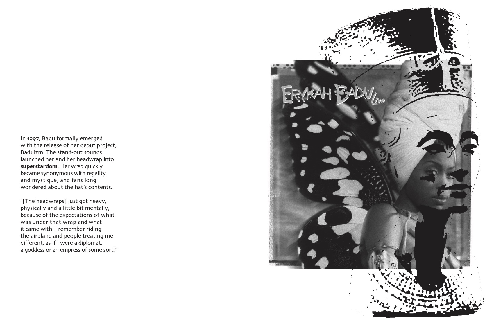
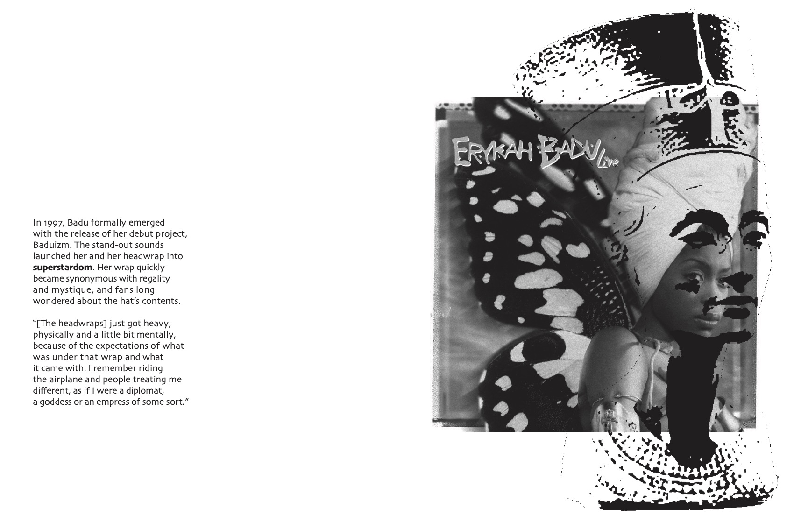

Erykah Badu est une musicienne, chanteuse, artiste dont l’univers se nourrit de sources variées. Elle s’inscrit à la fois dans la lignée de la soul, du hip hop, du jazz ; elle adopte un style esthétique afrofuturiste et sa philosophie se veut de l’esprit.
De fait, les modules satellitaires de l’exploration de cette artiste font écho à des anecdotes précises de ces multiples champs.
L’édition principale fonctionne sur le mode du «sound system» élément symbolique de son identité hip hop. Les différents pans de sa vie et de son travail y sont présentés de façons entremêlée, et comme conciliés par le système son.
Par ailleurs j’ai connu un lexique des mots d’argot employé dans ses musiques. Dans cette édition sont répertoriés des symboles qui se rapportent aux différents aspects de son art. Cet objet reprend l’idée de la collection, chère aux valeurs du hip hop.
Autrement, j’ai choisi de mettre en avant les différents personnages scéniques que l’artiste emprunte. Ce module nommé «Billboard» prend la forme d’une collection de tickets portant chacun un nom qui la définit.
J’ai également pensé la production d’un accessoire qui se rapporte directement à ceux de l’artiste. Il s’agit d’un foulard, objet permettant de protéger son esprit.
Le tout est contenu dans une boite de la forme B, lettre initiale de son nom.
 
